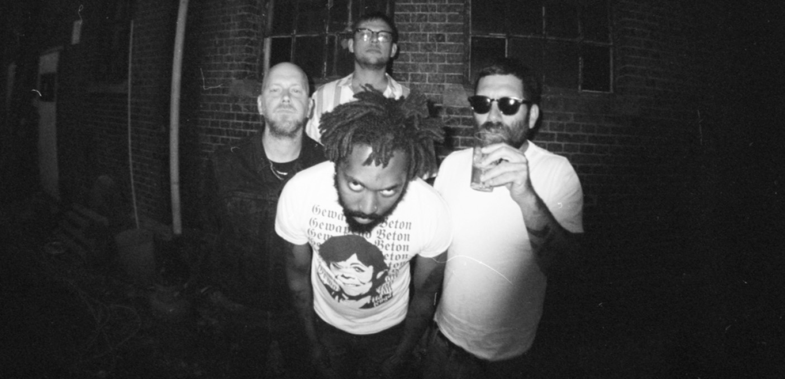
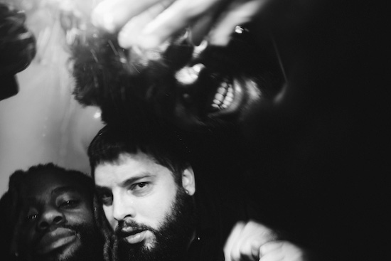
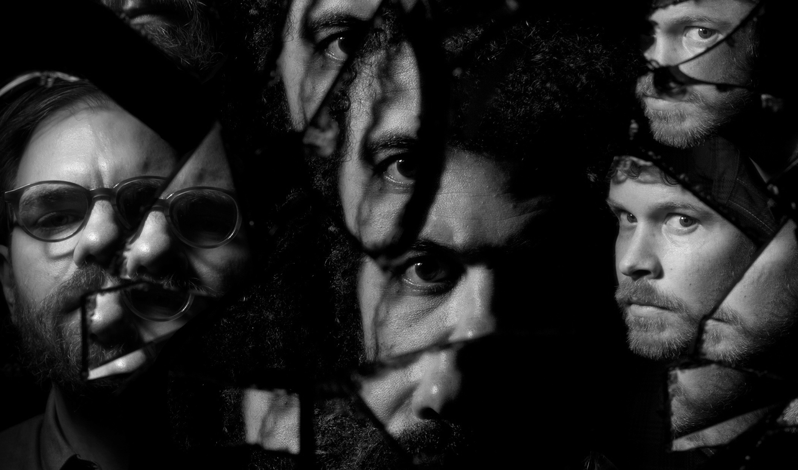

Clipping (stylized as clipping.) is an American experimental hip hop group from Los Angeles, California. The group consists of rapper Daveed Diggs and producers William Hutson and Jonathan Snipes.
History
Diggs and Hutson met in grade school, and Hutson and Snipes were college roommates.[5] The group began in 2009 as a remix project, with Hutson and Snipes taking a cappellas of mainstream rap artists and making power electronics and noise remixes of them to amuse themselves. Diggs joined in 2010 and began to write his own raps over their compositions.[6] They self-released their debut mixtape, midcity, on their website on February 5, 2013.[7] Though their expectations were low, and despite minimal promotion, the album was well-received, and five months later, they signed to Sub Pop. Their first album, CLPPNG, was released on June 10, 2014.[6]
The group does not see their abrasive sound as a rejection of mainstream hip hop or reaction against it, but as part of a hip hop tradition, including the likes of Dr. Dre and Public Enemy producers The Bomb Squad, who experimented with production and also used harsh, musique concrète-esque techniques in their music. Similarly, they think of themselves as a rap group rather than industrial-rap, noise-rap, or other mash-up genres.[6]
On June 14, 2016, they released an EP, Wriggle.[8] They then released their second studio album, Splendor & Misery, later on September 9.[9] A science fiction concept album, Splendor & Misery was nominated for the 2017 Hugo Awards in the category of "Best Dramatic Presentation (Short Form)" on April 4, 2017.[10]
In 2017, the group released a single, "The Deep". The song was nominated for a Hugo Award in 2018, their second consecutive nomination in the "Best Dramatic Presentation (Short Form)" category.[11]

On September 28, 2018, the group's song "Stab Him in the Throat" was released as part of The Rick and Morty Soundtrack. This album was released by Sub Pop and Adult Swim and featured songs from episodes of Rick and Morty.
On August 14, 2019, the group released a lyric video to YouTube for a new song titled "Nothing Is Safe", which borrowed heavily from the aesthetics of 1970s and '80s horror films like Halloween and the soundtrack works of John Carpenter. This was coupled with the announcement that their third full-length record, There Existed an Addiction to Blood, would be released on October 18 of the same year.[12]
On September 12, 2019, a second lyric video was released to YouTube to promote There Existed an Addiction to Blood. The track, titled "La Mala Ordina" featured guest appearances from rappers Elcamino and Benny the Butcher, with additional production from noise artist The Rita.[13]

On October 3, 2019, a music video for the track "Blood of the Fang" was released to YouTube to promote There Existed an Addiction to Blood.
On November 29, 2019, the band released a three-song EP further exploring the world of "The Deep". The EP was also further developed into a novel of the same name by writer Rivers Solomon; the members of clipping. are listed as co-authors. The Deep won the Lambda Literary Award for science fiction, and was nominated for Hugo, Nebula, and Locus awards.
On June 19, 2020, they released the track "Chapter 319" on Bandcamp, along with a previously SoundCloud-only track "Knees on the Ground", with all proceeds from the sales donated to organizations dedicated to racial justice. "Chapter 319" was recorded during the protests after the murder of George Floyd, while "Knees on the Ground" was originally recorded after the shooting of Michael Brown in 2014.

On August 26, 2020, they announced the album Visions of Bodies Being Burned, a companion piece to There Existed an Addiction to Blood; they also released the single "Say the Name" on the same day. The album was released on October 23 through Sub Pop.
On November 1, 2020, on their YouTube channel, they livestreamed a performance of the first variation of the socialist anthem The People United Will Never Be Defeated! – playing on a tape recorder, under a small flame, on loop, with the picture slowly distorting – until the 2020 United States presidential election was called. The performance was for a movement called "#BeginWithTheBallot" by Alarm Will Sound.[14]
On December 4, 2020, Daveed Diggs released a video in partnership with the Disney Channel entitled "Puppy for Hanukkah". The track was produced by clipping. bandmates Hutson and Snipes.[15] On December 25, 2020, a music video for the track "Piano Burning" was released to YouTube to promote There Existed an Addiction to Blood.
On September 21, 2022, the band announced and released the first of a series of four remix EPs to be released every Wednesday through October 12 via Sub Pop. The first, Remxng 2.1, features remixing artists including Loraine James, Bogdan Raczynski, and Lauren Bousfield.[16]